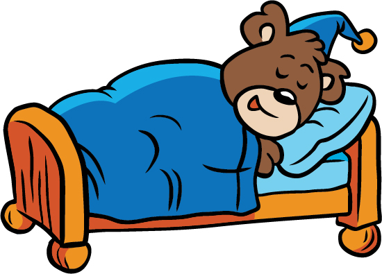

Sleep is a subject where most humans are familiar with due to the feeling of drowsiness and need of rejuvenating energy in result of sleep. Sleep is a broad topic since there are many variables that construct the result of sleep for a human. These variables can include the duration of sleep and the time of day you fall into slumber. But sleep not only creates the feeling of new energy for activity, it also conducts daily body functions. This raises the idea that sleep can be considered necessary for a human to live. If sleep is acknowledged as necessary for human life, then the variable of duration necessary for daily activity is also proposed. Since sleep seems to be a common pass time during the daytime, known as a “nap”, for most teenagers due to the stress of education, activity, and overwhelming emotions, this could raise the question of sleep necessary in relation to age. With age in mind, it also questions why students are expected to wake up and arrive to class for a full school time at such an early time. With the conduction of research, I have concluded the continuance of sleep is necessary for human life to function and daily activity is dependent on this.
There are five stages to the human function of sleep, starting at stage one, ending with REM sleep, and then continues to repeat during your sleep cycle. According to the American Sleep Association, “We spend almost fifty percent of our total sleep time in stage two sleep, about twenty percent in REM sleep, and the remaining thirty percent in the other stages (“What is Sleep?”).” Stage one is consistent of drifting in and out of sleep, where we can be awakened easily. In this stage, some humans experience hypnic myoclonia, which are sudden muscle contractions that are often followed by the feeling of falling. Throughout stage two and three, our brain waves slow down and eye movement decreases. When we enter stage four, there are no more eye movement or muscle activity, leading us into a deep sleep. In the American Sleep Association, it states, “People awakened during deep sleep do not adjust immediately and often feel groggy and disoriented for several minutes after they wake up (“What is Sleep?”).” Deep sleep is where some experience nightmares or sleepwalking. When we fall into REM sleep, breathing becomes noticeably rapid and irregular while our limb muscles are temporarily paralyzed. The REM sleep periods occur about seventy to ninety minutes after we fall asleep; the first cycle being relatively shorter and getting longer as our cycles repeat (“What is Sleep?”). In this stage, humans can experience odd dreams. The complete sleep cycle occurs for an average of ninety to a hundred ten minutes. Some chemicals can disturb these cycles while we sleep. A heavy smoker or someone who is addicted to caffeine, in drugs or coffee, will sleep very differently than an average teenager. Heavy smokers sleep cycles are broken very easily since they sleep very light and tend to wake up in the middle of the night due to nicotine withdrawal (“What is Sleep?”). Also, caffeine can disrupt our sleep and cause symptoms of insomnia, the inability to sleep (“What is Sleep?”).
One of the variables of the outcome of sleep is the extent. According to the American Sleep Association, “The amount of sleep each person needs depends on many factors, including age (“What is Sleep?”).” In comparison, infants depend upon sixteen hours of sleep when its essential for teenagers to receive nine hours. Since people tend to sleep lighter and shorter as they get older, adults only require approximately seven or eight hours. “The amount of sleep a person needs also increases if he or she has been deprived of sleep in previous days. Getting too little sleep creates a “sleep debt” (“What is Sleep?”).” When these hours are not met, you have not received enough sleep. This will leave you feeling drowsy throughout all parts of your day. If this is continuous, it is possible to get used to, but extremely dangerous due in behalf of impairing our judgment, reaction time, and other functions.
With animal studies, scientists are beginning to understand why sleep is a necessary component for daily function. In an experiment involving testing sleep dangers with rats, the American Sleep Association stated, “while rats normally live for two to three years, those deprived of REM sleep survive only about five weeks on average, and rats deprived of all sleep stages live only about three weeks (“What is Sleep?”)”. The rats also experienced peculiarly low body temperatures and sores as a result of the harmful affects on their immune system. Deprivation of sleep also has damaging effects on the nervous system. Minimal sleep will eventually lead to a loss of the ability to concentrate, impairing our memory and physical performance. More dangerous side effects of sleep deprivation can include hallucinations and development of mood swings. In another study, the American Sleep Association concluded, “Deep sleep coincides with the release of growth hormone in children and young adults… Activity in parts of the brain that control emotions, decision-making processes, and social interactions is drastically reduced during deep sleep, suggesting that this type of sleep may help people maintain optimal emotional and social functioning while they are awake (“What is Sleep?”).” It explains how the benefits of sleep on the emotional and social component, which also improve our recollection of memories and education. John Medina briefly explains why we sleep by stating, “The real reason we need to sleep may not be simply so that we can resupply our reserves, but so that we can do what humans do best. The real reason we may need to sleep is so we can learn. (Medina 27)” With adequate sleep, humans are not only able to live, but can concentrate and enhance our brains to increase knowledge.
In speaking on the topic of sleep deprivation and its effects, Daniel Barone and Ana Krieger said, “The importance of sleep can be ascertained by noting the effects of its loss, which tends to be chronic and partial, on cognition, mood, alertness, and overall health (Barone and Krieger 71).” The deprivation can begin to impact our daily activities. According to Amy Johnson’s research on sleep deprivation she concluded, “Sleep deprivation can cause forgetfulness, exhaustion, and fatigue…when a person is exhausted and fatigued it causes pessimism, sadness, stress, and anger (Johnson).” Sleep deprivation makes it more difficult, and potentially dangerous, to stay awake and on task throughout the day. It is also believed that sleep deprivation can mimic or exacerbate symptoms of Attention Deficit/Hyperactivity Disorder (ADHD), including distractibility, impulsivity, and difficulty with effortful control of attention (A. Academic Performance). The other factor of mood is brought into play with a deficient amount of sleep. A change in mood can easily affect the way you treat others and yourself throughout the day. A sad or angry mindset can induce over eating or loss of appetite, nonsocial ability, and dangerous thoughts. These inconsistent variables can shape your daily activities. It may seem more favorable to become unproductive with school work, and your likelihood of any physical activity decrease, leading your overall health to decline. On the dangerous factor, Amy Johnson said, “Most people drive a car on a regular basis, but driving a car while sleep deprived is just as bad as driving a car while under the influence of alcohol (Johnson).” With research, scientists concluded those who are struggling with sleep deprivation are not only hurting themselves, but also becoming dangerous to others around them. Johnson states, “People who have been awake for upwards of fifteen to twenty hours performed worse than a person with a blood alcohol level of .05, which is just under the legal limit for most states. (Johnson).” The most interesting conclusion of this research was fifty-five perfect were drivers under the age of twenty-five that had problems with drowsiness behind the wheel. This supports the theory of those sleep deprived, not only hurting their own wellbeing, but also others.

Physical activity, to any extent, has become a part of the human daily routine. This can include, but not limited to, walking to class, exercising at the gymnasium, or practicing for a sport. You use your brain for any type of physical activity, even though it might not seem so. Your brain tells you which way to turn when navigating your class, who to pass the ball to while on the court, or any decision you make while exercising. You can see how these simple activities can be affected when a human does not get satisfactory sleep. Amy Johnson stated, “Lack of sleep can cause recovery time to decrease and can cause hypoglycemia, both of which hinder athletic performance greatly (Johnson).” The disruption to the brain can also increase chances of injury while participating in activity. With the combination of higher chances of injury and longer recovery time, it with multiply the impact on an athlete, or anyone participating in physical, daily activity.
The study and research can be connected to the relation between student performance and amount of sleep achieved by students. In fact, “Scientists have consistently found a constellation of sleep factors—earlier bedtimes, more total sleep, and later rise times—associated with superior academic performance and higher grades (A. Academic Performance).” Today, “More than 85 percent of public junior and senior high schools in the United States begin morning classes before 8:30 a.m., with nearly 43 percent starting during the 7 o’clock hour (Introduction: The Timing of Education).” With this early rise, studies show most students wake up and arrive to school in a sleep-deprived state. In research, “A 2010 meta-analysis (statistical method combining different study results) of 61 studies concerning students 8-18 years of age, found sleepiness most strongly related to school performance, followed by sleep quality and sleep sufficiency (A. Academic Performance).” This introduces the concept of implementing a later start to school for the possibility to increase ability for students to gain more knowledge from a full school day. The foundation of a later start would allow students to endure ample sleep, allowing students to have the opportunity to achieve and pursue successful grades. In a recent study, “Dr. Kyla Wahlstrom of the University of Minnesota surveyed more than 7,000 high school students in Minnesota about their sleep habits and grades. Teens who received A’s averaged about fifteen more minutes sleep than the B students, who in turn averaged eleven more minutes than the C’s, and the C’s had ten more minutes than the D’s (A. Academic Performance).” The study supports the correlation between longer duration of sleep and superior grades. With sufficient sleep due to later start times, they have recorded fewer automobile accidents, less depression, fewer physical health difficulties, and greater attention levels (Introduction: The Timing of Education). The elimination of early starting hours can overall improve the achievements of education and mental, physical, and emotion health of students.
With the abundance of research collection and analysis, it is established that sleep is necessary for human life and has a significant impact on our daily mental and physical state. Studies show that around a third of American workers are sleep deprived. Other than the being the “greatest thing in the world”, sleep rejuvenates and prepares us for the function of the next day. This is especially the case when sufficient duration of sleep is achieved. When not enough sleep is received, our bodies become altered into a dangerous, vulnerable state where we could potentially become moody, forgetful, neglectful, unable to concentrate, lethargic, etc. The duration also has an affect on physical performance and stamina through the day. When humans don’t acquire enough sleep, it is shown to decrease performance in the classroom. This leads to the proposition of evolving school start times to be later in the day. With this later start, students can increase the capability for knowledge. Overall, scientists have supported this hypothesis along with providing evidence that sleep is necessary and has a detrimental impact on the daily activities of humans.
Works Cited Page
"A. Academic Performance." The Impact of School Start Times on Adolescent Health and
Academic Performance. Wordpress, 22 Oct. 2016. Web. 09 Nov. 2016.
Barone, Daniel A., and Ana C. Krieger. "The Function Of Sleep." AIMS Neuroscience 2.2
(2015): 71-90. Academic Search Complete. Web. 24 Oct. 2016.
"Introduction: The Timing of Education.” The Impact of School Start Times on Adolescent
Health and Academic Performance. Wordpress, 22 Oct. 2016. Web. 09 Nov. 2016.
Johnson, Amy. "Sleep Deprivation and Effects on Everyday Life." Sleep Deprivation and Effects
on Everyday Life. Serendip, 19 July 2012. Web. 07 Nov. 2016.
Medina, John. "Why Do We Need To Sleep?." Psychiatric Times 21.9 (2004): 27-29. Academic
Search Complete. Web. 14 Oct. 2016.
"What Is Sleep?" American Sleep Association. ASA American Sleep Association, May 2007. Web. 03 Nov. 2016.